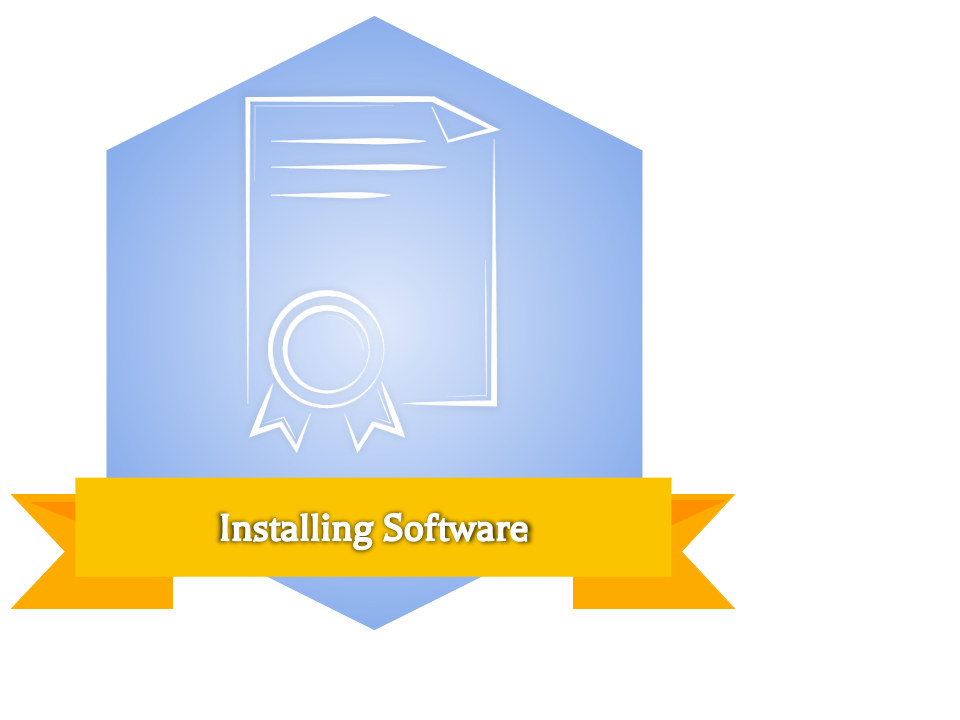
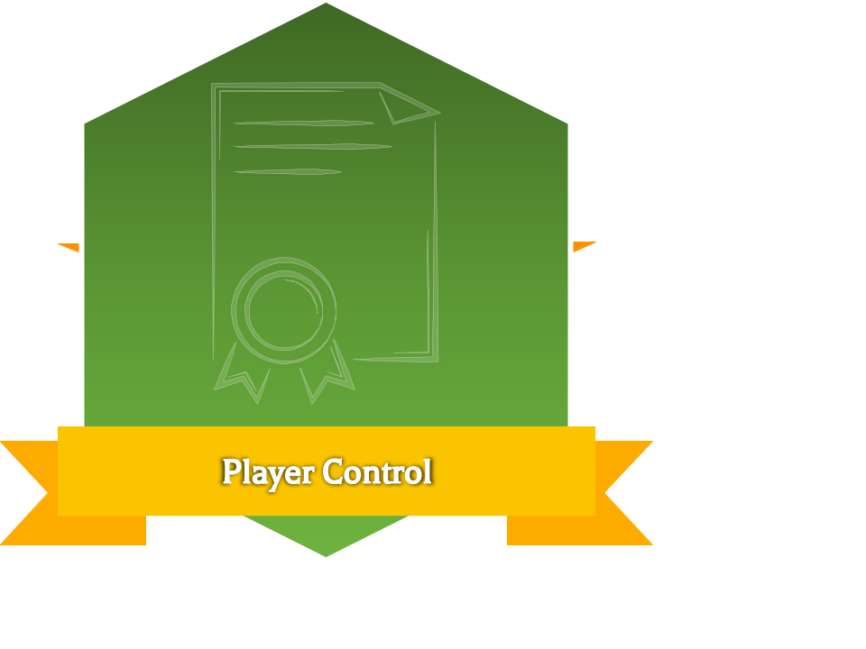
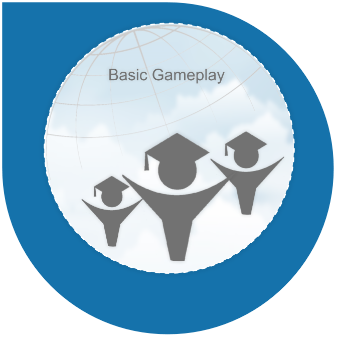
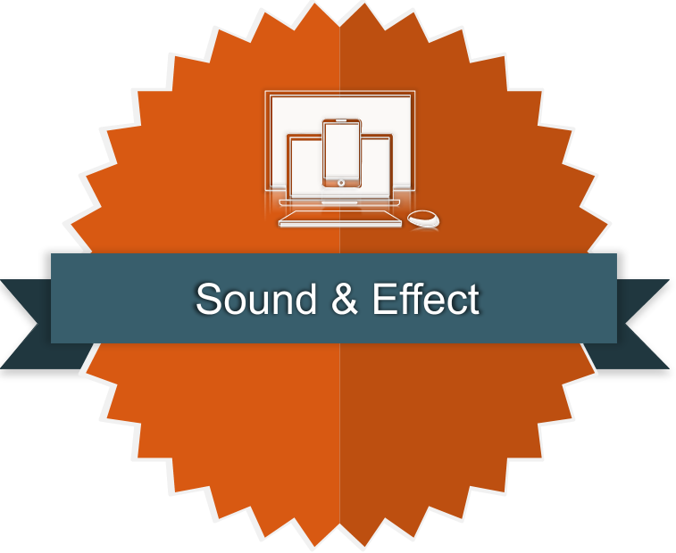
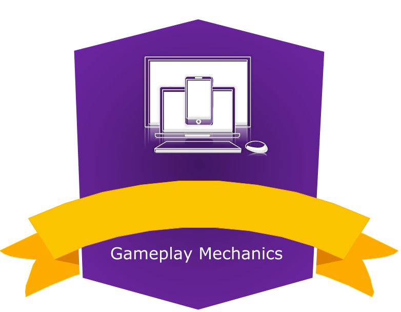
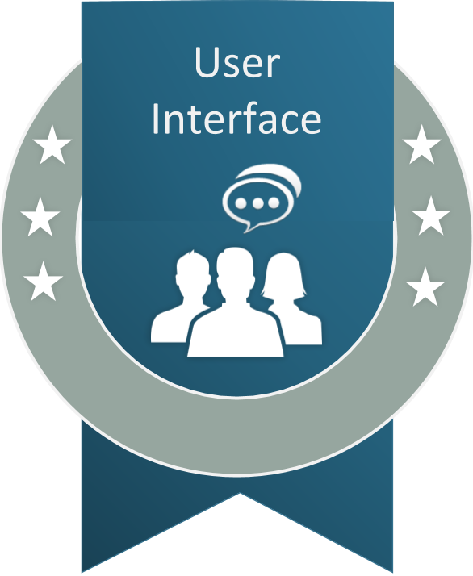

The global media and entertainment industry is complex, expansive, and rapidly evolving. Within it, two highly creative, increasingly lucrative fields have emerged that are capturing the hearts and minds of millions: interactive applications and video game creation. Students taking the course will design, develop, and deploy an original application or game. Students will learn to write and maintain a large, living game design document (GDD) and a daily design journal. Students might gain introductory artistic skills to 3D Modeling and Texturing using Maya if time permit
This is my first attempt at a 3D game design curriculum, as such I will be using established lesson and resources from Unity. Students will work through the Create with Code course throught Unity. It's a free course with helpful videos and walk throughs of different projects. Students will also get the change to experience the Design Process and plan their on 3D game and make it as a final for the class, which they will present Game trail style to the class!
Summary
In this official course from Unity, you will learn to Create with Code as you program your own exciting projects from scratch in C#. As you iterate with prototypes, tackle programming challenges, complete quizzes, and develop your own personal project, you will transform from an absolute beginner to a capable Unity developer. By the end of the course - if you are completing it through a school program - you will also be ready to put your skills to the test on the Unity Certified User Programmer Exam. Most importantly, though, when you complete this course, you will have the confidence that you can Create with Code. 3D assets for this course were generously provided by our partner, Synty Studios, and are not for commercial use
Google Classrooms
Course Overview
|  | In this introductory Unit, you will be introduced to the course, then you will download and install the Unity software. Most likely the software will be installed on the school computers but it may be helpful if you want to install Unity at home! |
|  | In this Unit, you will program a car moving side-to-side on a floating road, trying to avoid (or hit) obstacles in the way. In addition to becoming familiar with the Unity editor and workflow, you will learn how to create new C# scripts and do some simple programming. By the end of the Unit, you will be able to call basic functions, then declare and tweak new variables to modify the results of those functions. |
|  | In this Unit, you will program a top-down game with the objective of throwing food to hungry animals - who are stampeding towards you - before they can run past you. In order to do this, you will become much more familiar with some of the most important programming and Unity concepts, including if-then statements, random value generation, arrays, collision detection, prefabs, and instantiation. In completing this Unit, you will learn how to program a basic game with the ability to launch projectiles and maneuver the player to keep the game alive. |
|  | In this Unit, you will program a fast-paced endless side-scrolling runner game where the player needs to time jumps over oncoming obstacles to avoid crashing. In creating this prototype, you will learn how to add music and sound effects, completely transforming the experience of your projects. You will also learn how to create dynamic endless repeating backgrounds, which are critical for any side-scrolling games. Finally, you will learn to incorporate particle effects like splatters and explosions, which make your games so much more satisfying to play. |
|  | In this Unit, you will program an arcade-style Sumo battle with the objective of knocking increasingly difficult waves of enemies off of a floating island, using power ups to help defeat them. In creating this prototype, you will learn how to implement new gameplay mechanics into your projects, which are new rules or systems that make the game more interesting to play. On one hand, you will learn to program a powerup, which give the player a temporary advantage. On the other hand, you will learn to program increasingly difficult enemy waves, which make survival more challenging for the player. A good balance of powerups and increasing difficulty make for a much more interesting gameplay experience. |
|  | In this Unit, you will program a game to test the player’s reflexes, where the goal is to click and destroy objects randomly tossed in the air before they can fall off the screen. In creating this prototype, you will learn how to implement a User Interface - or UI - into your projects. You will add a title screen with a difficulty select menu that will control how challenging the gameplay is, you will add a score display that will track how many points the player has earned, and you will add a Game Over screen, which will allow the player to restart and try again. In learning these skills, you will be able to create a fully “playable” experience that the user can enjoy from start to finish without having to restart the application to try it again. |
State Competencies
Enduring Understanding